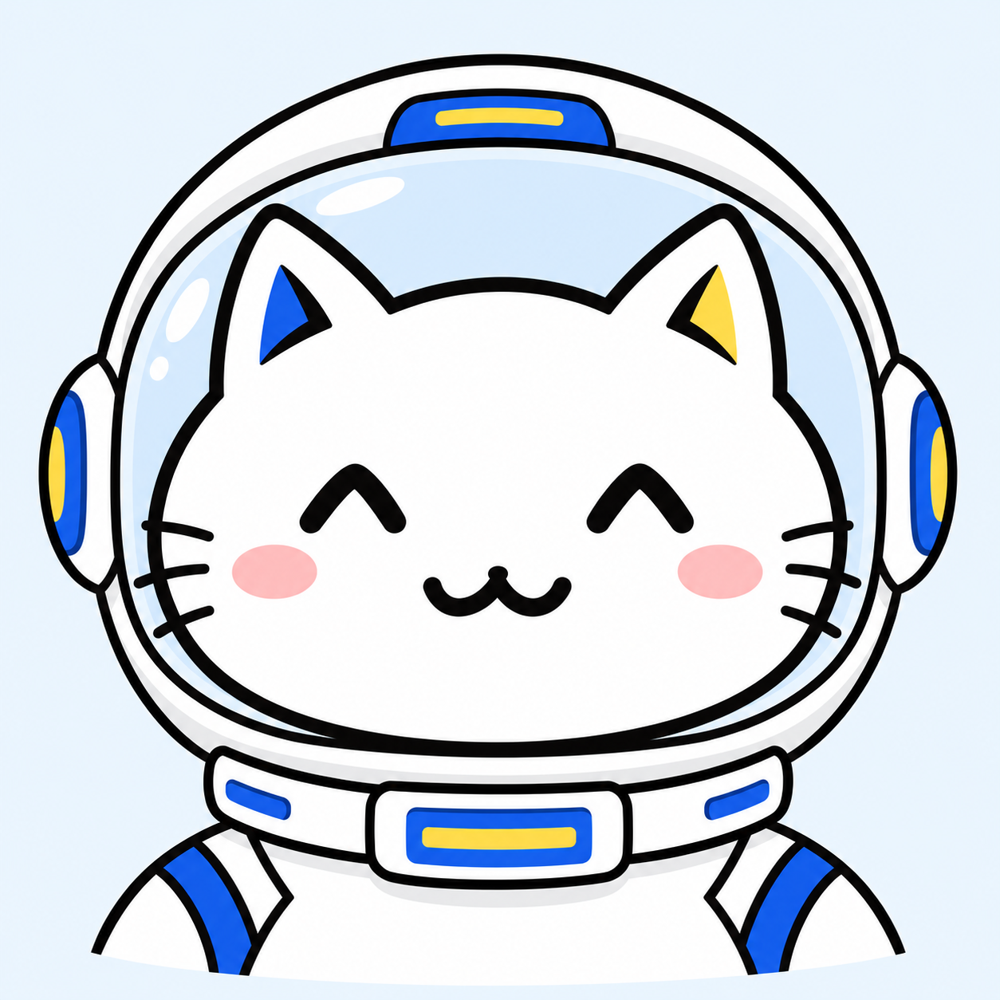

<!doctype html>
<html lang="zh-CN">
<meta charset="utf-8"><meta name="viewport" content="width=device-width,initial-scale=1">
<title>Luminous 宇航员猫猫</title>
<style>
*{box-sizing:border-box}body{margin:0;background:#f3f4f6;color:#1a1a1a;font-family:"Microsoft YaHei",sans-serif}main{max-width:1000px;padding:32px;margin:auto}h1{font-size:28px;margin:0 0 8px}header p{margin:0 0 24px;color:#526071;font-size:14px}.portraits{display:grid;grid-template-columns:repeat(3,1fr);gap:20px}figure{margin:0;background:white;border:2px solid #1a1a1a;border-radius:6px;overflow:hidden;box-shadow:3px 3px 0 #1a1a1a}.portrait{display:block;width:100%;aspect-ratio:1;object-fit:cover}figcaption{display:flex;align-items:center;justify-content:space-between;padding:12px 16px;border-top:1px solid #d1d5db;font-size:16px;font-weight:700}.icon{width:40px;height:40px;border-radius:50%;border:1px solid #1a1a1a;background:#eff6ff;overflow:hidden}.icon img{width:100%;height:100%;object-fit:cover;transform:scale(.9)}@media(max-width:640px){main{padding:20px}.portraits{grid-template-columns:repeat(2,1fr);gap:14px}h1{font-size:22px}figcaption{font-size:14px;padding:10px}.icon{width:32px;height:32px}}
</style>
<main><header><h1>Luminous 宇航员猫猫</h1><p>本款保留作为后续角色 Cos 的参考。</p></header><div class="portraits">
<figure><figcaption>宇航员<span class="icon"></span></figcaption></figure>
</div></main>
</html>
